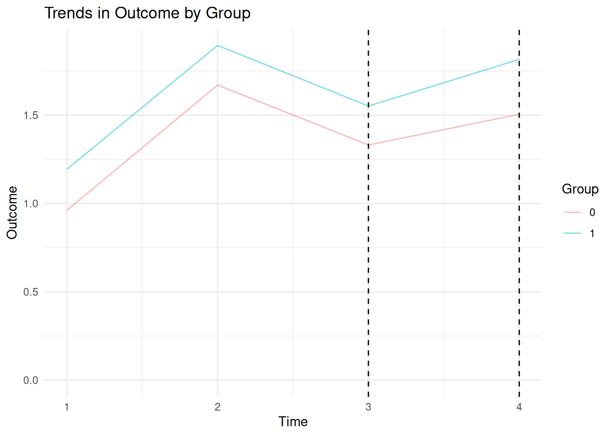
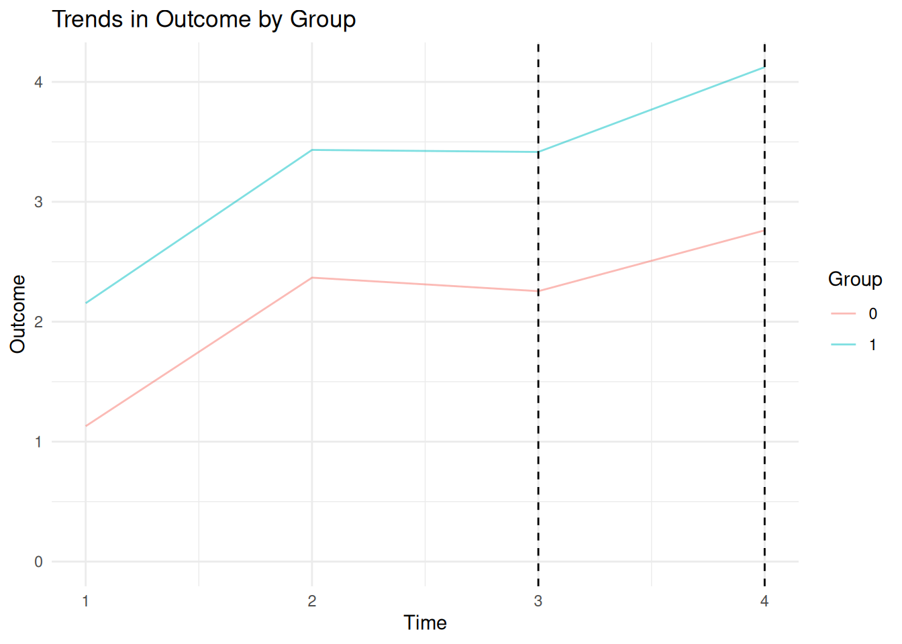
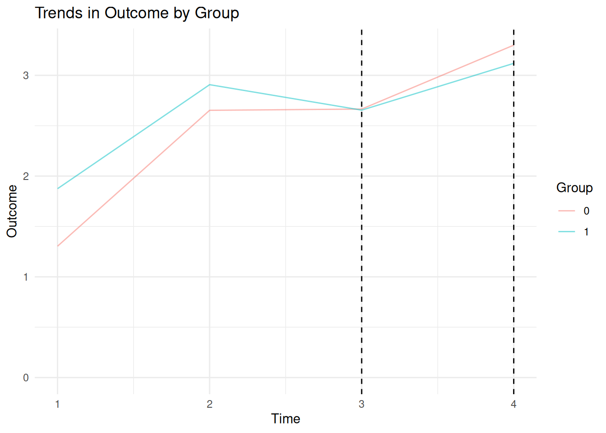
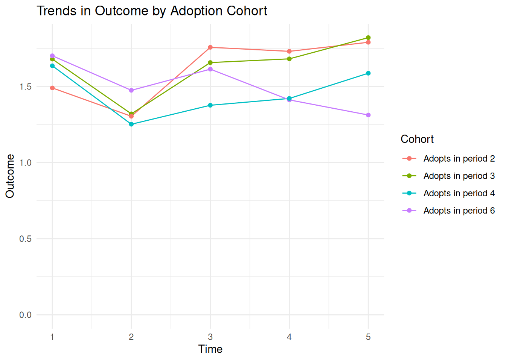
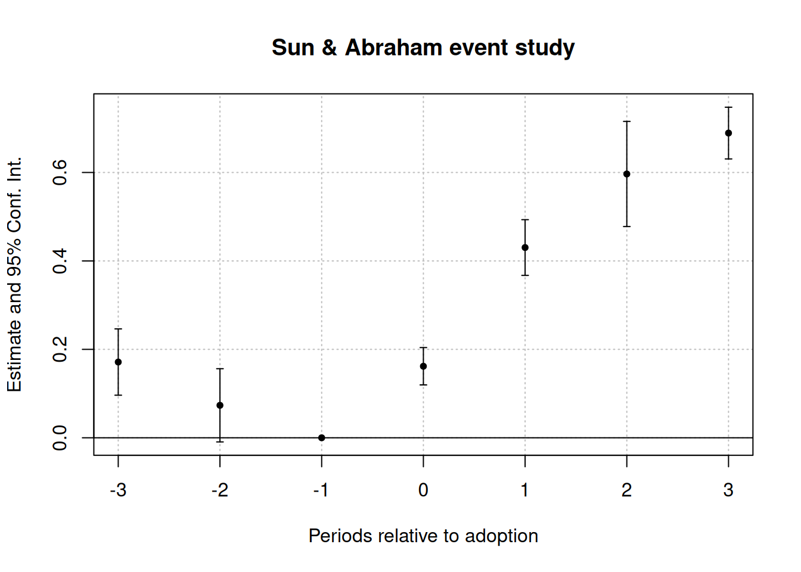

7. Differences in Differences
The differences-in-differences (DiD) method is a quasi-experimental approach to estimate the causal effect of a treatment by comparing changes in outcomes over time between a treatment group and a control group. DiD is very attractive, because of its ability to control for unobserved time-invariant confounders, which is useful in many practical settings.
Design considerations for a diff-in-diff
This first section refreshes some key concepts in the design of a DiD.
Core Components
- Pre- and Post-Treatment Periods: Define clear time periods for before and after the treatment. Multiple pre- and post-treatment periods strengthen the design (Cunningham, 2021). Several pre-periods allow you to test for differential pre-trends, and several post-periods allow you to examine whether effects are immediate, build up gradually, or fade out. This needs to be planned well with any implementing partners, so that the rollout date is fixed and documented in advance, baseline data collection is completed before any treatment activity begins, and the length of the post-period is long enough to capture the outcomes of interest.
- Treatment and Control Groups: Ensure the control group is unaffected by the treatment and is comparable to the treatment group. Random assignment is ideal, but the strength of a DiD design is that it also works with non-randomized designs if the identifying assumptions hold. Comparability does not require identical levels of the outcome, only that the groups would have followed the same trend in the absence of treatment. Guard against spillovers (e.g., control units benefiting indirectly) and anticipation effects (units changing behavior before treatment starts), since both bias the estimate.
- Data Requirements: Panel data (repeated observations for the same units over time) is preferred. Cross-sectional data can be used in a repeated cross-section DiD design, but this requires stronger assumptions, notably that the composition of the sampled population does not change differentially between groups over time. Collect the same outcome measures, with the same instruments, in every wave and for both groups. Also collect covariates measured before treatment, which can be used to improve precision or to condition the parallel trends assumption.
Key assumptions
Before settling on a diff in diff for your project, make sure that your study design satisfies the key assumptioms of a diff-in-diff:
- Parallel Trends: The treatment and control groups would have followed the same trend in the absence of the intervention. This is the core identifying assumption for DiD. It is difficult to prove, but with multipe pre-interventions periods, you can at least assess whether the assumption holds before the intervention.
- Stable Unit Treatment Value Assumption (SUTVA, no spillovers): No interference between units, meaning the treatment status of one unit does not affect the outcomes of another (Rubin, 1980).
- Stable composition: The units observed before and after treatment are the same (panel) or drawn from the same population (repeated cross-section).
- No Anticipation: The treatment does not affect outcomes before its implementation. Violations of this assumption can bias estimates.
Intervention Timing
The timing of the intervention determines both the estimator you should use and the assumptions you need to defend.
- Simultaneous (single-date) adoption: All treated units receive the intervention at the same time. This is the classic two-group, two-period setup (extendable to multiple periods). The treatment effect is identified by comparing the change in outcomes for treated units with the change for control units. It is simple to implement and interpret, and the standard two-way fixed effects (TWFE) estimator is valid here. The main requirement is a credible control group that is never treated during the study window.
- Staggered adoption: Units receive the intervention at different times, for example in phased rollouts or when implementing partners can only reach some sites at a time. This design is often more practical and ethically easier to justify, since everyone eventually receives the intervention, and it provides more variation in treatment timing. However, when treatment effects differ across units or evolve over time, the conventional TWFE estimator can be biased, because already-treated units end up serving as controls for later-treated units (Goodman-Bacon, 2021; de Chaisemartin & D’Haultfœuille, 2020). Use estimators designed for this setting, such as Callaway & Sant’Anna (2021), Sun & Abraham (2021), or Borusyak, Jaravel & Spiess (2024), which compare newly treated units only to not-yet-treated or never-treated units.
Estimating diff-in-diff in R
Generating data
First, generate some data, using fabricatr.
I generate 10 villages, half of which receive the treatment; in each village I create 10 households. And then I create 4 time periods: three pre-periods, and one post.
My outcome y consists of a random variable per household,
a random confouder x,
time and village-level shocks,
a treatment effect of 0.1 and a random error term:
library(fabricatr)
library(tidyverse)
library(randomizr)
set.seed(2)
df <-
fabricate(
village = add_level(
N = 10,
treatment = rep(0:1, N/2),
vill_shock = runif(N)
),
hh = add_level(
N = 10,
y0 = runif(N)
),
# then create the year
t = add_level(
N = 4,
nest = FALSE,
t_shock = runif(N),
post = c(rep(0,N-1),1)
),
obs = cross_levels(
by = join_using(hh, t),
obs = NULL,
x = rnorm(n = N, mean = 0, sd = 0.1),
error = rnorm(n = N, mean = 0, sd = 0.1),
y = y0 + x + vill_shock + t_shock + (post * treatment * 0.1) + error
)
)Plot
First, let’s visualize: Visualizing trends in the outcome variable for the treatment and control groups before and after the treatment can help assess the parallel trends assumption.
library(ggplot2)
# Plot trends for treatment and control groups
df |>
summarize(
y = mean(y),
.by = c(treatment, t)
) |>
ggplot(aes(x = as.numeric(t), y = y, color = factor(treatment))) +
geom_line(alpha = 0.5) +
#geom_smooth(method = "loess", se = FALSE) +
labs(
title = "Trends in Outcome by Group",
x = "Time",
y = "Outcome",
color = "Group"
) +
geom_vline(xintercept = 3, linetype = "dashed") +
geom_vline(xintercept = 4, linetype = "dashed") +
ylim(0,NA) +
theme_minimal()
Basic Two-Way Fixed Effects Model
The most common approach to estimating DiD is a two-way fixed effects model, which includes unit and time fixed effects. This can be estimated using the feols() function from the fixest package.
library(fixest)
# Example: Estimating DiD with feols
model <- feols(
y ~ treatment:post | treatment + t,
data = df,
cluster = ~village
)
summary(model)## OLS estimation, Dep. Var.: y
## Observations: 400
## Fixed-effects: treatment: 2, t: 4
## Standard-errors: Clustered (village)
## Estimate Std. Error t value Pr(>|t|)
## treatment:post 0.084747 0.032367 2.61828 0.027889 *
## ---
## Signif. codes: 0 '***' 0.001 '**' 0.01 '*' 0.05 '.' 0.1 ' ' 1
## RMSE: 0.425827 Adj. R2: 0.316674
## Within R2: 0.001853We get quite close to our true treatment effect of 0.1.
Parallel trends
Let’s have a look at the parallel trends assumption.
For this, we run a event-study-type regression to determine if the difference between treatment and control is the same as in 2019 (our base year):
\[ Y_{it} = \alpha_i + \lambda_t + \sum_{\substack{k = k_{\min} \\ k \neq 3}}^{2} \beta_k \, \mathbb{1}[t = k] \cdot D_i + \varepsilon_{it} \]
where \(Y_{it}\) is y for unit \(i\) in year \(t\), \(\alpha_i\) are unit fixed effects, \(\lambda_t\) are t fixed effects, and \(D_i\) is our treatment. The sample is restricted to \(t \leq 3\), and 3 is the omitted reference year, so \(\beta_{3} \equiv 0\). Each \(\beta_k\) measures how the association between \(D_i\) and the outcome in year \(k\) differs from that in 2019. Parallel pre-trends imply \(H_0: \beta_k = 0\) for all \(k < 3\), which we test jointly with a Wald test. Standard errors are clustered at the level of village.
pretrends_model <- feols(
y ~ i(t, treatment, ref = "3") | treatment + t,
cluster = ~village,
data = df |> filter(t <= 3)
)
wald(pretrends_model, keep = "t::")## Wald test, H0: joint nullity of t::1:treatment and t::2:treatment
## stat = 0.078391, p-value = 0.924622, on 2 and 294 DoF, VCOV: Clustered (village).The wald test fails to reject the null hypothesis; so trends appear to be parallel. Do note that this is an underpowered test.
Personally, I quite like a coefficient plot:
library(modelsummary)
# first, run model plot at different confidence bands:
pretrends_dat <-
map_dfr(c(.90, .95, .99), function(x) {
modelplot(pretrends_model, conf_level = x, draw = FALSE) %>%
mutate(.width = x)
}) |>
mutate(
t = str_extract(term, "t::(\\d):treatment", group = 1)
)
# and plot the result
ggplot(pretrends_dat, aes(
y = estimate, x = t,
ymin = conf.low, ymax = conf.high)) +
geom_point(size = 5 ) +
ggdist::geom_pointinterval(
position = "dodge",
interval_size_range = c(1, 3),
fatten_point = .1) +
geom_hline(yintercept = 0, linetype = "dashed")## Error in loadNamespace(x): there is no package called 'ggdist'The trends in t1 and t2 are equal to those in t3, so trends are parallel.
Covariate Adjustment
Include time-variant covariates to improve precision and control for observed confounders.
## OLS estimation, Dep. Var.: y
## Observations: 400
## Fixed-effects: treatment: 2, t: 4
## Standard-errors: Clustered (village)
## Estimate Std. Error t value Pr(>|t|)
## x 0.579521 0.093819 6.17700 0.00016332 ***
## treatment:post 0.084606 0.022653 3.73479 0.00466286 **
## ---
## Signif. codes: 0 '***' 0.001 '**' 0.01 '*' 0.05 '.' 0.1 ' ' 1
## RMSE: 0.421752 Adj. R2: 0.327981
## Within R2: 0.020862Look at that, an extra star!
Synthetic Differences-in-Differences
Synthetic DiD (SDID) combines DiD with synthetic control methods to improve the estimation of treatment effects, particularly when the parallel trends assumption may not hold (Arkhangelsky et al., 2021). The synth package in R implements this approach.
Let’s first violate some parallel trends!
I modify my data frame so that y0 now is affected by a time trend that is different for treatment than control.
The difference is tiny.
I also create a level difference between the groups, just to show that synthdid is not bothered at all by this.
set.seed(2)
df_synth <-
fabricate(
treatment = add_level(
N = 2,
treatment = 0:1,
trend = c(0.86,1.086),
level_diff = c(0,1)
),
village = add_level(
N = 10,
#treatment = rep(0:1, N/2),
vill_shock = runif(N)
),
hh = add_level(
N = 10,
y0 = runif(N)
),
# then create the year
t = add_level(
N = 4,
nest = FALSE,
t_shock = runif(N),
post = c(rep(0,N-1),1)
),
obs = cross_levels(
by = join_using(hh, t),
obs = NULL,
x = rnorm(n = N, mean = 0, sd = 0.1),
error = rnorm(n = N, mean = 0, sd = 0.1),
y = level_diff + (y0 * (trend * as.numeric(t))) + x + vill_shock + t_shock + (post * treatment * 0.1) + error
)
)Let’s plot the shape of our data:
library(ggplot2)
# Plot trends for treatment and control groups
df_synth |>
summarize(
y = mean(y),
.by = c(treatment, t)
) |>
ggplot(aes(x = as.numeric(t), y = y, color = factor(treatment))) +
geom_line(alpha = 0.5) +
#geom_smooth(method = "loess", se = FALSE) +
labs(
title = "Trends in Outcome by Group",
x = "Time",
y = "Outcome",
color = "Group"
) +
geom_vline(xintercept = 3, linetype = "dashed") +
geom_vline(xintercept = 4, linetype = "dashed") +
ylim(0,NA) +
theme_minimal()
Note that the levels are quite different, but that’s no issue, we only care about trends. However, the difference in them is quite difficult to see.
Let’s formally test for parallel trends:
pretrends_model_synth <- feols(
y ~ i(t, treatment, ref = "3") | treatment + t,
cluster = ~village,
data = df_synth |> filter(t <= 3)
)
wald(pretrends_model_synth, keep = "t::")## Wald test, H0: joint nullity of t::1:treatment and t::2:treatment
## stat = 3.07538, p-value = 0.046908, on 2 and 594 DoF, VCOV: Clustered (village).The wald test barely fails to reject the null hypothesis. Given how underpowered this test is, we shouldn’t really put much stock in any results. The coefficient plot shows substantial differences in the tends, but only t=2 is significant at the 5% level.
library(modelsummary)
# first, run model plot at different confidence bands:
pretrends_synth_dat <-
map_dfr(c(.90, .95, .99), function(x) {
modelplot(pretrends_model_synth, conf_level = x, draw = FALSE) %>%
mutate(.width = x)
}) |>
mutate(
t = str_extract(term, "t::(\\d):treatment", group = 1)
)
# and plot the result
ggplot(pretrends_synth_dat, aes(
y = estimate, x = t,
ymin = conf.low, ymax = conf.high)) +
geom_point(size = 5 ) +
ggdist::geom_pointinterval(
position = "dodge",
interval_size_range = c(1, 3),
fatten_point = .1) +
geom_hline(yintercept = 0, linetype = "dashed")## Error in loadNamespace(x): there is no package called 'ggdist'Let’s see what this does to our findings:
## OLS estimation, Dep. Var.: y
## Observations: 800
## Fixed-effects: treatment: 2, t: 4
## Standard-errors: Clustered (village)
## Estimate Std. Error t value Pr(>|t|)
## x 0.813475 0.327327 2.48521 0.02242846 *
## treatment:post 0.271174 0.062278 4.35428 0.00034145 ***
## ---
## Signif. codes: 0 '***' 0.001 '**' 0.01 '*' 0.05 '.' 0.1 ' ' 1
## RMSE: 0.879664 Adj. R2: 0.496615
## Within R2: 0.012874They are clearly biased. Our true impact was 0.1, and here we find 0.27, which implies quite a bit of bias.
Let’s see how synthetic diff in diff deals with this (Arkhangelsky et al. 2019).
## Error in library(synthdid): there is no package called 'synthdid'setup_synth <-
df_synth |>
mutate(D = treatment * post) |>
panel.matrices(
unit = "hh",
time = "t",
outcome = "y",
treatment = "D"
)## Error in panel.matrices(mutate(df_synth, D = treatment * post), unit = "hh", : could not find function "panel.matrices"## Error in synthdid_estimate(setup_synth$Y, N0 = setup_synth$N0, T0 = setup_synth$T0): could not find function "synthdid_estimate"## Error: object 'model_synth' not foundThe synthetic diff-in-diff is much closer to our true treatment effect.
In the plot, we can see that synthethic diff-in-diff got the trends lined up. Note that synthdid did not ensure that levels are the same, as that is no pre-requisite of a diff-in-diff.
## Error: object 'model_synth' not foundMatched diff-in-diff
We are often tempted to a matched diff in diff. If we match on pre-intervention outcomes, we should have nicely comparable control group, right?
Let’s first match on pre-intervention (t3) outcomes, using coarsened exact matching:
library(MatchIt)
cem_match <-
matchit(
treatment ~ y,
method = "CEM",
data = df_synth |> filter(t == "3")
)A love plot shows we improved balance by a lot:
## Error in loadNamespace(x): there is no package called 'cobalt'Now we have to get the weights from out match object into our analysis data:
matched_ids <-
match.data(cem_match, drop.unmatched = FALSE) |> #count(weights)
select(hh, weights)
df_matched <-
df_synth |>
left_join(matched_ids, by = "hh")First, let’s visualize: Visualizing trends in the outcome variable for the treatment and control groups before and after the treatment can help assess the parallel trends assumption.
# Plot trends for treatment and control groups
df_matched |>
summarize(
y = weighted.mean(y, w = weights),
.by = c(treatment, t)
) |>
ggplot(aes(x = as.numeric(t), y = y, color = factor(treatment))) +
geom_line(alpha = 0.5) +
#geom_smooth(method = "loess", se = FALSE) +
labs(
title = "Trends in Outcome by Group",
x = "Time",
y = "Outcome",
color = "Group"
) +
geom_vline(xintercept = 3, linetype = "dashed") +
geom_vline(xintercept = 4, linetype = "dashed") +
ylim(0,NA) +
theme_minimal()
Something is up here: the trends are completely botched. This is due to regression to the mean.
Let’s see what this does to our findings:
feols(
y ~ treatment:post + x | treatment + t,
data = df_matched,
weights = ~weights,
cluster = ~village
) ## OLS estimation, Dep. Var.: y
## Observations: 544
## Weights: weights
## Fixed-effects: treatment: 2, t: 4
## Standard-errors: Clustered (village)
## Estimate Std. Error t value Pr(>|t|)
## x 0.900659 0.189187 4.76068 1.3598e-04 ***
## treatment:post -0.467471 0.089490 -5.22373 4.8352e-05 ***
## ---
## Signif. codes: 0 '***' 0.001 '**' 0.01 '*' 0.05 '.' 0.1 ' ' 1
## RMSE: 0.531768 Adj. R2: 0.579668
## Within R2: 0.057985We are way worse off than in our initial specification!
Part of this is because I made y very volatile: the more stable to matching variables are, the less bad this problem becomes.
I am quite surprised about the direction of the change: I would have expected underestimation of the effect.
The key message here is that matching on outcomes is a bad idea.
Staggered Adoption
With staggered adoption, villages start treatment at different times. This creates a problem for the two-way fixed effects (2FE) estimator when the treatment effect is dynamic, meaning it grows over time.
The 2FE estimator learns about the effect from changes in treatment status: a village going from untreated to treated. Villages whose status does not change in a given period, whether they are never treated or already treated, are used as the comparison group. For villages that are already treated, this is only valid if their outcomes change purely because of the time trend. If the treatment effect is still growing in these villages, that growth is mistaken for a time trend. It is then subtracted from the effect measured in the villages that start treatment later, so the 2FE estimate is biased, usually towards zero or even the wrong sign (Goodman-Bacon, 2021).
With a constant effect this problem does not arise, because already-treated villages show no extra change that could be mistaken for a time trend.
library(fabricatr)
library(tidyverse)
library(randomizr)
set.seed(2)
T <- 5
df <-
fabricate(
village = add_level(
N = 12,
# adoption period: 3 villages each in periods 2, 3, 4, and 3 never treated
cohort = as.numeric(as.character(
complete_ra(N, m_each = c(3, 3, 3, 3), conditions = c(2, 3, 4, T+1))
)),
vill_shock = runif(N)
),
hh = add_level(
N = 10,
y0 = runif(N),
hh = as.numeric(hh)
),
# then create the periods
t = add_level(
N = T,
nest = FALSE,
t_shock = runif(N),
period = 1:N
),
obs = cross_levels(
by = join_using(hh, t),
obs = NULL,
x = rnorm(n = N, mean = 0, sd = 0.1),
error = rnorm(n = N, mean = 0, sd = 0.1),
treated = as.numeric(period >= cohort),
# dynamic effect: grows by 0.2 for each period since adoption
tau = if_else(treated == 1, 0.2 * (period - cohort + 1), 0),
y = y0 + x + vill_shock + t_shock + tau + error
)
) Before, we constructed the treatment effect to be constant, now we have to take the average over all rounds:
# True average effect on the treated observations, for reference
true_att <- df |> filter(treated == 1) |> summarize(att = mean(tau)) |> pull(att)
true_att## [1] 0.4222222Plot
With staggered adoption, plot trends separately by adoption cohort. Each cohort should track the never-treated group until its own adoption date, then diverge.
df |>
mutate(
cohort_label = if_else(is.infinite(cohort), "Never treated",
paste("Adopts in period", cohort))
) |>
summarize(y = mean(y), .by = c(cohort_label, period)) |>
ggplot(aes(x = period, y = y, color = cohort_label)) +
geom_line() +
geom_point() +
labs(
title = "Trends in Outcome by Adoption Cohort",
x = "Time",
y = "Outcome",
color = "Cohort"
) +
ylim(0, NA) +
theme_minimal()
Naive Two-Way Fixed Effects Model
The conventional TWFE estimator regresses the outcome on a treatment indicator that switches on at each unit’s adoption date, with unit and time fixed effects. Note that the fixed effects are now at the village level (the unit at which treatment is assigned), not on the treatment indicator itself.
library(fixest)
twfe <- feols(
y ~ treated | village + period,
data = df,
cluster = ~village
)
summary(twfe)## OLS estimation, Dep. Var.: y
## Observations: 600
## Fixed-effects: village: 12, period: 5
## Standard-errors: Clustered (village)
## Estimate Std. Error t value Pr(>|t|)
## treated 0.22593 0.052409 4.31087 0.0012333 **
## ---
## Signif. codes: 0 '***' 0.001 '**' 0.01 '*' 0.05 '.' 0.1 ' ' 1
## RMSE: 0.334731 Adj. R2: 0.430299
## Within R2: 0.033039With heterogeneous and dynamic effects, this coefficient is a weighted average that can be biased, because already-treated villages act as controls for later-treated ones (Goodman-Bacon, 2021). Compare it with true_att above: it is way lower.
Staggered-Robust Estimators
Sun & Abraham (2021) is available directly in fixest via sunab(). It estimates cohort-specific effects by time relative to adoption, using never-treated units as the comparison, and aggregates them into an event study.
We can plot the coefficients in each period:
# Event-study plot (effects by periods relative to adoption)
iplot(sa, main = "Sun & Abraham event study", xlab = "Periods relative to adoption")
The increase nicely, just as we constructed them. In fact, the ATT is quite close to what we constructed:## OLS estimation, Dep. Var.: y
## Observations: 600
## Fixed-effects: village: 12, period: 5
## Standard-errors: Clustered (village)
## Estimate Std. Error t value Pr(>|t|)
## ATT 0.406497 0.026559 15.3055 9.2154e-09 ***
## ---
## Signif. codes: 0 '***' 0.001 '**' 0.01 '*' 0.05 '.' 0.1 ' ' 1
## RMSE: 0.319831 Adj. R2: 0.469887
## Within R2: 0.117209Callaway & Sant’Anna (2021) estimates group-time average treatment effects, ATT(g, t), comparing each cohort to never-treated units, and then aggregates them.
## Error in library(did): there is no package called 'did'cs <- att_gt(
yname = "y",
tname = "period",
idname = "hh",
gname = "cohort",
data = df |> mutate(cohort = if_else(cohort > T, 0, cohort)), # cohort needs to 0 for never treated
control_group = "nevertreated"
)## Error in att_gt(yname = "y", tname = "period", idname = "hh", gname = "cohort", : could not find function "att_gt"## Error in aggte(cs, type = "simple"): could not find function "aggte"Again, the ATT is very similar